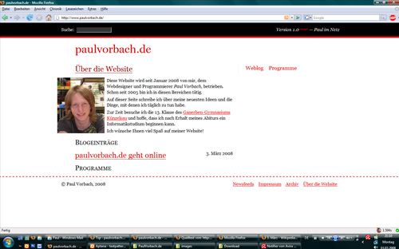

Schon im März 2008 habe ich mein erstes Weblog gestartet. Die Aktion war aber leider nicht von Dauer: Volle zwei Monate ging der Spaß, dann habe ich es wieder eingestellt.
Vielleicht bin ich nicht gemacht zum Bloggen – ich weiß es nicht. Dummerweise habe ich mir damals kein Backup erstellt. Zumindest kann ich es im Moment nicht finden.
Nun habe ich doch noch einen Screenshot ausgegraben.

Screenshot von paulvorbach.de.
Weblogs interessieren mich schon seit sehr langer Zeit. Allerdings verbringe ich immer wesentlich mehr Zeit damit, an der Technik dahinter zu arbeiten, als damit, über neue Themen zu schreiben. Dabei hätte ich mehr als genug, über das ich schreiben kann. Stattdessen beschäftige ich mich mit den Dingen selbst.